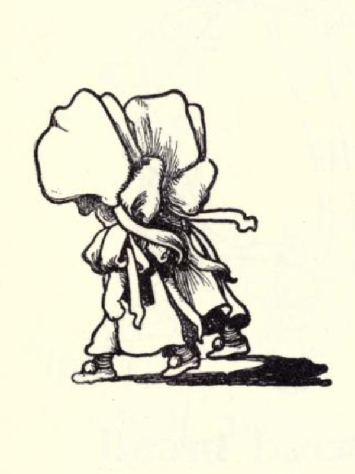

Vowel Phonograms or and wor Video
This lesson is about the r-controlled vowel phonograms or and wor, the sound each phonogram makes, and how to write these phonograms. Follow along with this video to write and sound out the or and wor phonograms.
This lesson is about the r-controlled vowel phonograms or and wor, the sound each phonogram makes, and how to write these phonograms. Follow along with this video to write and sound out the or and wor phonograms.
Use pages 1-5 of the linked printable to practice the sounds for all single-sound consonants and consonant digraphs. Also, practice all the words spelled with ai, ay, eigh, ee, igh, oa, au, aw, oi, oy, ui, er, ir, ur, or and wor.

Have someone read this poem to you or study the poem while looking for phonograms and words that you know.